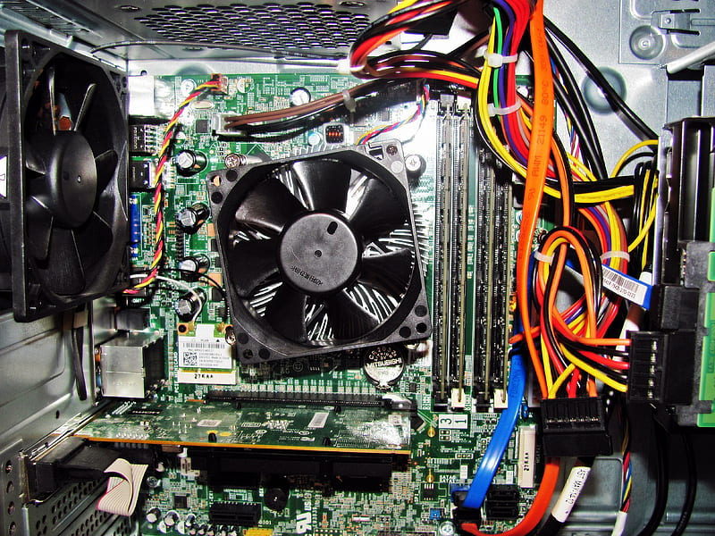

Free computer disposal with secure data destruction
Manage your organisation's obsolete IT assets with our free nationwide computer disposal and recycling service. Whatever the size of your company, we securely collect all types of computers for disposal or recycling.
BOOK A COLLECTIONFree collections when you recycle at least 10 laptops, PCs & servers (any combination). It's also free to recycle almost all waste IT with us.
Secure, planet-friendly computer disposal
All computers have to be recycled by law in line with the WEEE regulations
Did you know that to comply with WEEE regulations, you must recycle all computers? The good news is that we can recycle and reuse all parts of a computer: motherboards, cards, the hard drive, cables, power supply, and optical drives — they all include recyclable components. CPUs contain valuable metals like copper, silver, gold, and silicon, and we can even re-process the plastic case. Choose Zero Tech Waste and do your bit for the planet.
Secure data destruction
Our monitored process ensures the secure management and destruction of all sensitive data stored on equipment during collection, transit, and in our facilities, before it's broken down or recycled. Alongside computer disposal, we also collect all your other IT equipment, making it easier for you to create space for new and upgraded equipment.
We use the latest NCSC-approved data erasure software and CPNI-approved shredding technology to ensure the secure destruction of any confidential data stored on your computer is properly destroyed. You can be confident your IT recycling is in safe hands.

Ready to book?
Frequently asked questions
Is computer disposal free for my business?
Yes. We collect for free when you recycle 10 or more laptops, PCs or servers in any combination. See what we collect for the full list of qualifying items.
Do you securely destroy data on old computers?
Yes. We use NCSC-approved data erasure software and CPNI-approved shredding technology to destroy any data held on your computers. Read more about our secure data destruction process.
What happens to computers after collection?
Every computer is assessed for reuse before any recycling decision is made. Working devices are refurbished and returned to use, and only equipment that can't be reused is broken down for materials recovery.
Can I get proof that my computers have been recycled?
Yes. You'll receive a Waste Transfer Note as standard, and can add our enhanced data destruction service for an individual asset audit trail and Certificate of Destruction at £5 (ex. VAT) per item.
What types of computers do you collect?
We collect desktops, workstations, all-in-ones and small form factor PCs, including Apple Macs, Windows and Linux machines of any age or condition.
Can you collect computers alongside other IT equipment?
Yes. We commonly collect computers together with laptops, servers and other redundant IT equipment in a single visit.
How is computer recycling different from just scrapping old equipment?
Scrapping breaks a device down for raw materials, which is a less efficient outcome than refurbishing it for reuse. We assess every computer for reuse first, so only equipment that has reached the end of its working life goes for materials recovery.